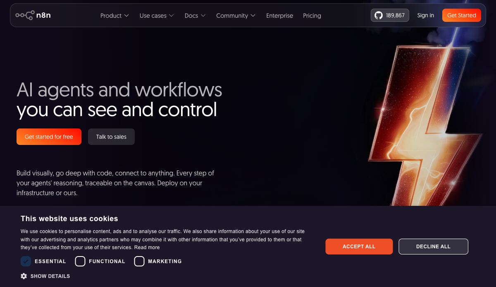
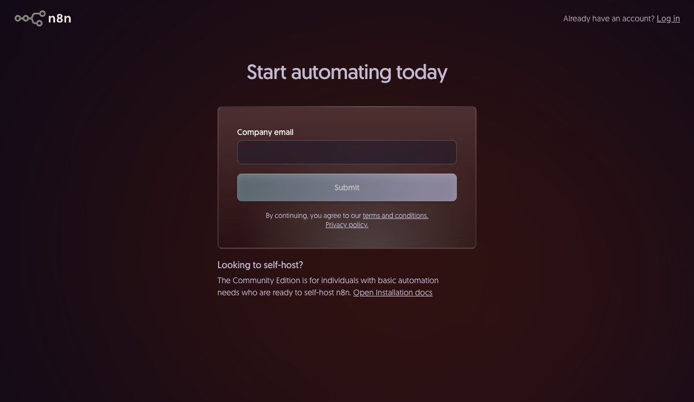

מישהי בקבוצת הווטסאפ של חברת הסטארטאפ שלה, אחרי שהתקינה n8n, שאלה: "אוקיי אבל מה זה node?" מישהו ענה: "כמו לגו." היא ענתה: "אוקיי אבל מה זה לגו?" הפסקתי לדמיין את המשך השיחה, כי המוח שלי לא מסוגל לשם.
המציאות היא שרוב האנשים שבונים אייג׳נטים היום לא באמת מבינים מה קורה מתחת למכסה המנוע, ואין להם צורך להבין. n8n בנויה בדיוק בשבילן/הם.
יאללה, בואו נצלול.
n8n: זה לא "עוד כלי no-code", זה הרבה יותר מזה
n8n: פלטפורמת אוטומציה ויזואלית שמאפשרת לחבר בין שירותים, לוגיקה, ו-AI agents בלי לכתוב קוד גרידא. כל "block" עושה דבר אחד, ואתם/ן מחברות/ים אותם בקנבס.

n8n.io — "AI Workflow Automation Platform". מסביר את עצמו.
המודל המנטלי: במקום לכתוב קוד שאומר "כשיקרה X, עשה Y, ואז Z", אתם/ן מגררות/ים בלוקים לקנבס ומחברות/ים אותם בקווים. כל בלוק (node) עושה דבר אחד בלבד. Trigger מפעיל. HTTP Request שולח בקשה. AI Agent חושב. Gmail שולח מייל. השרשרת הזאת היא ה-workflow.
עובדה חביבה: n8n היא open-source ויש לה מעל 400 integrations מובנות.
Zapier, לשם השוואה, עולה פי 5-10 יותר עבור אותו נפח אוטומציות.
n8n.cloud היא הגרסה המנוהלת. נרשמות/ים, נכנסות/ים, מתחילות/ים לבנות. הטריאל בחינם ל-14 יום, אחרי זה כ-20 דולר בחודש לשימוש אישי. בשביל המדריך הזה, זה מה שנשתמש בו.
Self-hosted: מורידות/ים את n8n ומריצות/ים אותה על המחשב או שרת. ה-community edition חינמית לגמרי. אם עובדות/ים עם נתונים עסקיים רגישים, זו הדרך. שרת של DigitalOcean עולה כ-6 דולר בחודש.
הרשמה ל-n8n.cloud

app.n8n.cloud/register — הרשמה פשוטה. אימייל וסיסמה, בלי כרטיס אשראי.
אחרי הכניסה, מגיעות/ים ל-dashboard הראשי:
n8n Dashboard — לאחר כניסה ראשונה
Screenshot the main n8n dashboard after logging in. Shows the left sidebar with "Workflows", the empty workspace, and the "Create new workflow" button. This is the starting point readers will see.
סיור בממשק: מה רואים ולמה זה חשוב
n8n Canvas — ממשק ריק עם Manual Trigger
Create a new workflow. Screenshot the empty canvas with the "When clicking Test workflow" Manual Trigger node in the center. Annotate: (1) Left sidebar, (2) Canvas area, (3) The + button, (4) Save/Run/Activate buttons at top.
Schedule Trigger: מריץ אוטומטית בזמן קבוע. יש UI ויזואלי שבונה את ה-cron בשבילכן/ם — לוחצות/ים "Every Day" ומגדירות/ים שעה.
Webhook Trigger: מחכה לאות מחוץ. לשימוש מתקדם יותר.
Schedule Trigger — הגדרת "כל יום ב-8:00"
Add a Schedule Trigger node. Screenshot the configuration panel open on the right showing "Every Day" selected and 08:00 set as the time. This is what "production" looks like.
AI Agent Node מופיע בקנבס, configuration panel פתוח
Screenshot after adding the AI Agent node — shows the node on canvas connected to the trigger, and the right-side configuration panel open with System Prompt field, Model field, and Max Iterations visible.
ב-System Prompt מדביקות/ים:
אתה אייג׳נט בוקר. המשימה שלך: כל פעם שמריצים אותך, תבצע:
1. קרא את 10 המיילים האחרונים מ-Gmail (אל תקרא ספאם).
2. סכם כל מייל בשתי שורות: נושא ופעולה נדרשת.
3. שמור את הסיכום ב-Google Sheets תחת התאריך של היום.
4. אם יש מייל דחוף, סמן אותו בתגית "URGENT".
כללים:
- אל תשלח מיילים בלי לשאול.
- אל תמחק כלום.
- אם משהו לא ברור, כתוב "לא הצלחתי לעבד" ועבור הלאה.
System Prompt מלא ב-AI Agent Node
Screenshot the AI Agent configuration panel with the full system prompt pasted in. Shows the Hebrew text in the System Prompt field. This is Tal's "CLAUDE.md equivalent" in n8n.
ב-MODEL: לוחצות/ים "Add credential", בוחרות/ים Anthropic (Claude), מכניסות/ים API key:
Credentials dialog — הוספת Anthropic API key
Screenshot the "Create Credential" dialog for Anthropic API. Shows the API key input field. Blur/redact the actual key value. This is the connection to Claude's brain.
Node שלישי: הכלים שנותנים לאייג׳נט ידיים
Tool Node: node שמחובר ל-AI Agent דרך חיבור מיוחד מסוג "Tools". מייצג יכולת: לשלוח מייל, לקרוא גיליון, לבצע HTTP request.
Gmail Tool מחובר ל-AI Agent
Screenshot showing the Gmail tool node connected to the AI Agent via the Tools port (different color than regular connections). The configuration panel shows the Gmail credential and "Read Emails" operation selected.
Google Sheets Tool מחובר ל-AI Agent
Screenshot showing the Google Sheets tool node connected. Configuration shows "Append Row" operation — this is where the summaries get saved.
Window Buffer Memory: node שמחבר ל-AI Agent ושומר את ה-context של השיחה הפנימית בתוך ריצה אחת.
Window Buffer Memory מחובר ל-AI Agent
Screenshot showing the Window Buffer Memory node connected to the AI Agent's Memory port. Configuration panel shows Session ID set to "morning-agent-v1" and Window Size set to 20.
ה-Workflow המלא: כל הnodes מחוברים
Workflow מלא — כל הnodes על הקנבס
Screenshot the complete workflow: Manual Trigger → AI Agent ← Gmail Tool, Google Sheets Tool, Window Buffer Memory. All nodes connected, canvas zoomed out enough to see everything. This is the "money shot" of the article.
ריצה ראשונה: מה לצפות
לוחצות/ים "Test workflow". תראו את ה-workflow רץ בזמן אמת:
Workflow רץ בזמן אמת — nodes מאירים
Screenshot during execution — nodes lighting up green as they complete. The AI Agent node should show the spinning indicator. This is the visual payoff that makes n8n exciting.
AI Agent Node — תוצאות הריצה פתוחות
Screenshot after clicking the AI Agent node post-execution. Shows the "Output" panel with each tool call the agent made, the results it received, and the final summary it produced. Readers need to see the inner thinking.
Debugging: כשמשהו נשבר
לשונית ה-Executions — היסטוריית ריצות
Screenshot the Executions tab in the left sidebar showing a list of past runs — one green (success) and one red (failed). This shows readers where to look when things break.
ריצה כושלת: node אדום עם הודעת שגיאה
Screenshot a failed execution with a red node. Click the red node and screenshot the error message panel. Shows readers what debugging looks like in practice.
סיכום הסדרה
בחלק הראשון הסברנו מה זה בכלל אייג׳נט. בחלק השני בנינו אחד ב-Claude Code. בחלק הזה בנינו אותו שוב ב-n8n, בלי שורת קוד.
הכלי לא חשוב. מה שחשוב הן ארבע השאלות: מה ה-Trigger, מה ה-"עשה", מה הגבול, ומה ה-"סיים". אלה ארבע השאלות שיבדלו בין אייג׳נט שעובד לאייג׳נט שמוחק לכן/ם מיילים ב-3 בלילה.
אכן.
כמה מכן/ם כבר בנו agent, ומה הייתה הבעיה הכי מוזרה שנתקלתם/ן בה? כותבות/ים לי. 🙏